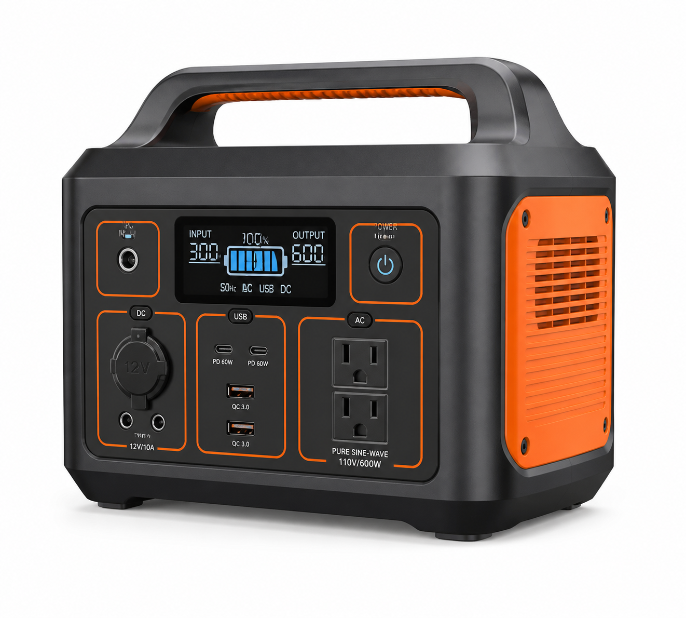
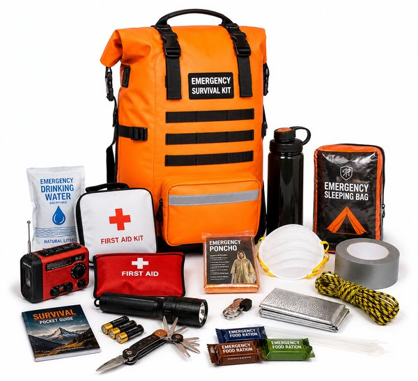
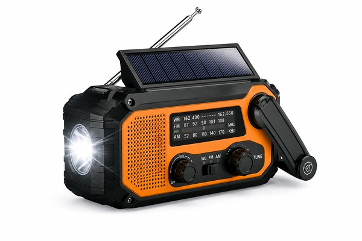
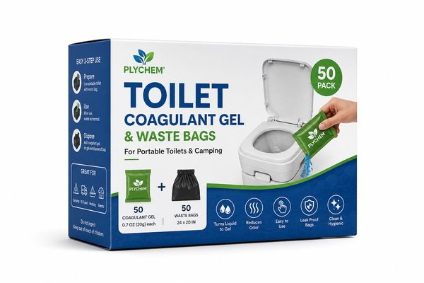
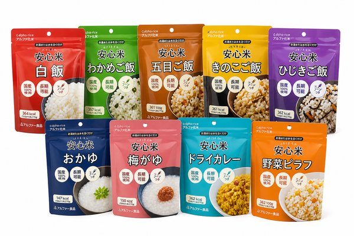
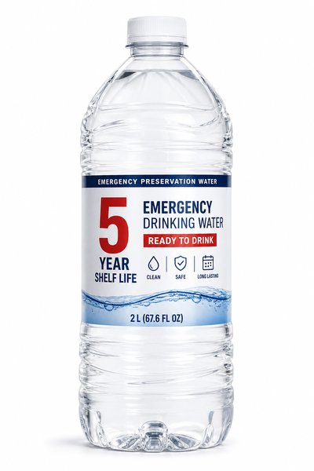
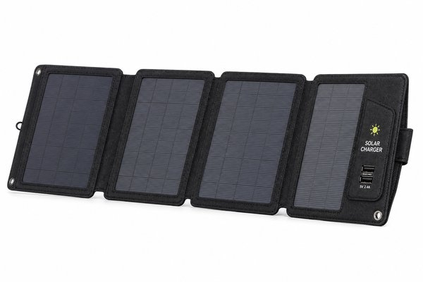
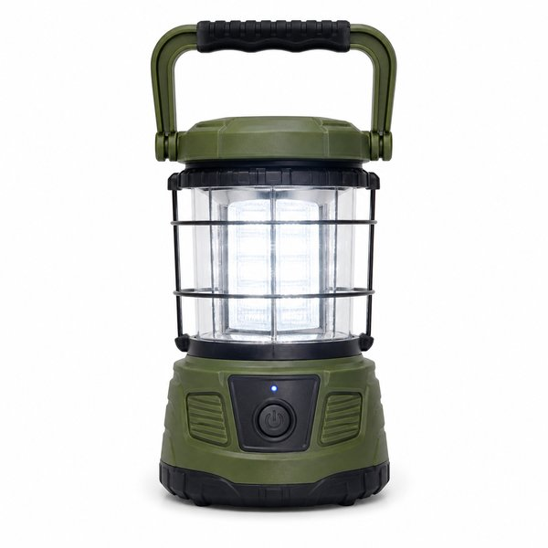
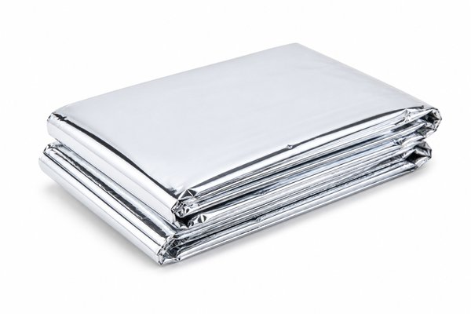
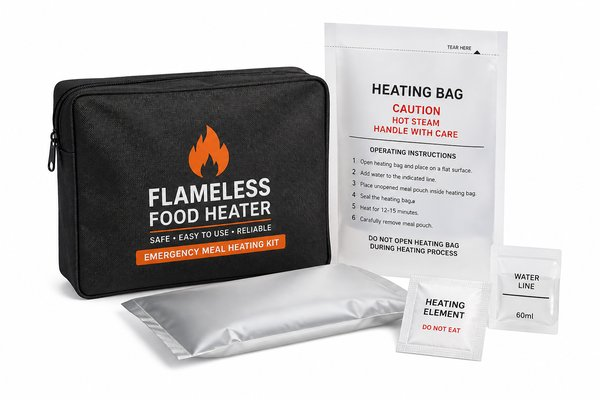

【2026年最新】一家に一台必ず備えたい！本当に役立つ最強防災グッズ＆ポータブル電源おすすめ10選
地震や台風、突然の大規模停電。「いつか備えなきゃ」と思いながらも、何から買い揃えればいいか分からず後回しになっていませんか？
いざ災害が発生したとき、もっとも困るのは「停電によるスマホのバッテリー切れ」「断水によるトイレの停止」「水と非常食の枯渇」です。慌ててからでは手に入らないからこそ、平時の今こそ備蓄しておく必要があります。
本記事では、防災士の推奨基準をもとに編集部が実際に揃えて「これがあれば停電しても家族を守れる」と確信した、一家に一台必ず備えておきたい最強防災グッズ＆ポータブル電源10選をご紹介します。
- おすすめ10選 スペック・特徴比較表
- BEST 1｜RIVER 2 Pro ポータブル電源 768Wh リン酸鉄リチウムイオン電池
- BEST 2｜防災セット 1人用 31点 避難リュックセット 防災士監修
- BEST 3｜手回し充電ラジオ 防水防塵 多機能防災ラジオ 1台6役
- BEST 4｜非常用簡易トイレ 50回分 凝固剤＆黒色防臭袋セット 15年保存
- BEST 5｜アルファ米 12種類コンプリートセット 5年常温保存水入り
- BEST 6｜おいしい水 富士山のバナジウム天然水 5年長期保存水 2L×6本
- BEST 7｜ソーラーチャージャー 28W 2ポート 折りたたみ式高効率ソーラーパネル
- BEST 8｜LEDランタン Explorerシリーズ EX-109D 最大1000ルーメン 3色調色
- BEST 9｜エマージェンシーアルミ保温シート 5枚セット カサカサ音がしない防寒
- BEST 10｜火を使わない 発熱剤 Mサイズ 10回分加熱セット 防災用
- 🎁【読者限定】完全無料で試せる人気サービス
- まとめ：生活をラクにする最初の一歩
| 順位 | 商品名 | ブランド | 最大の特徴・おすすめ理由 | 総合評価 |
|---|---|---|---|---|
| BEST 1 | RIVER 2 Pro ポータブル電源 768Wh リン酸鉄リチウムイオン電池 | EcoFlow（エコフロー） | 約70分の超高速フル充電で台風や停電の警報が出てからでも間に合う | 4.9 ★ |
| BEST 2 | 防災セット 1人用 31点 避難リュックセット 防災士監修 | アイリスオーヤマ | 防災士監修で本当に必要なアイテムだけが無駄なく揃う | 4.9 ★ |
| BEST 3 | 手回し充電ラジオ 防水防塵 多機能防災ラジオ 1台6役 | 山善（YAMAZEN） | 電気が完全に止まっても手回しと太陽光で半永久的に稼働 | 4.8 ★ |
| BEST 4 | 非常用簡易トイレ 50回分 凝固剤＆黒色防臭袋セット 15年保存 | 凝固剤のプロ | 15年間長期保存可能で一度買えば買い替えの手間が不要 | 4.9 ★ |
| BEST 5 | アルファ米 12種類コンプリートセット 5年常温保存水入り | 尾西食品（Onisi） | お湯で15分、水でも60分で本格的な美味しいご飯が食べられる | 4.9 ★ |
| BEST 6 | おいしい水 富士山のバナジウム天然水 5年長期保存水 2L×6本 | アサヒ飲料 | 大手ブランドの品質管理基準で5年後も安心・安全に飲める | 4.9 ★ |
| BEST 7 | ソーラーチャージャー 28W 2ポート 折りたたみ式高効率ソーラーパネル | BigBlue | 停電が何日続いても太陽の光がある限り無限にスマホを充電可能 | 4.8 ★ |
| BEST 8 | LEDランタン Explorerシリーズ EX-109D 最大1000ルーメン 3色調色 | GENTOS（ジェントス） | 1000ルーメンの圧倒的光量で暗闇の恐怖を一掃しリビング全体を明るく | 4.9 ★ |
| BEST 9 | エマージェンシーアルミ保温シート 5枚セット カサカサ音がしない防寒 | 静音サバイバルシート | 静音設計で避難所の中でも周囲に気兼ねなく体を包める | 4.8 ★ |
| BEST 10 | 火を使わない 発熱剤 Mサイズ 10回分加熱セット 防災用 | モーリアンヒートパック | ガスや電気が止まっても少量の水だけでアツアツの食事が完成 | 4.8 ★ |
RIVER 2 Pro ポータブル電源 768Wh リン酸鉄リチウムイオン電池

わずか70分で100%満充電できる業界最高峰の急速充電ポータブル電源。長寿命のリン酸鉄リチウムイオン電池を採用し約10年間毎日使っても劣化しません。定格出力800W（X-Boost時最大1000W）でスマホ充電から扇風機、電気毛布まで動かせます。
- 約70分の超高速フル充電で台風や停電の警報が出てからでも間に合う
- 充放電サイクル3,000回以上の超長寿命で10年以上安心
- スマホ約57回充電可能で停電時の家族全員の情報収集を完全サポート
- 本体重量が約7.8kgあるため片手での長距離運搬は少し重い
防災セット 1人用 31点 避難リュックセット 防災士監修

東日本大震災の教訓から防災士が厳選した、避難初日の生存に必要な31アイテムを詰め込んだ決定版リュック。防水ターポリン生地のリュックに、懐中電灯・簡易トイレ・エア枕・アルミブランケット・救急セットなどが機能的に収納されています。
- 防災士監修で本当に必要なアイテムだけが無駄なく揃う
- 雨や水濡れに強い撥水・防水リュック生地を採用
- リュック内に空きスペースがあり自分専用の薬や着替えを追加可能
- 1人用のセットのため家族の人数分揃える必要がある
手回し充電ラジオ 防水防塵 多機能防災ラジオ 1台6役

手回しハンドル、ソーラー、USB充電、乾電池の4WAY電源に対応した頼れる防災ラジオ。AM/FM/ワイドFM対応で災害時の確実な情報収集ができるほか、高輝度LED懐中電灯、サイレン、スマホ充電機能まで備えています。
- 電気が完全に止まっても手回しと太陽光で半永久的に稼働
- 災害時の公式緊急速報を受信できるワイドFM対応
- スマホへの緊急充電機能付きで連絡手段を確保
- 手回し充電でスマホを満充電にするのは腕の労力が必要（非常用通話分目安）
非常用簡易トイレ 50回分 凝固剤＆黒色防臭袋セット 15年保存

災害時の断水で一番深刻な「トイレ問題」を即座に解決する簡易トイレセット。自宅の洋式便器に袋をセットして用を足し、高吸水性ポリマーの凝固剤を振りかけるだけで約1分でゼリー状に固まり、ニオイを完全に封じ込めます。
- 15年間長期保存可能で一度買えば買い替えの手間が不要
- 中身が見えない厚手の黒色ポリ袋でプライバシーも安心
- 水を使わず菌の繁殖と悪臭の発生をしっかりシャットアウト
- 大人1人あたり1日5回分を目安に備蓄数を計算する必要あり
アルファ米 12種類コンプリートセット 5年常温保存水入り

お湯または水を注ぐだけでふっくら炊きたてのご飯が完成する非常食の王道。白飯、五目ごはん、チキンライス、ドライカレー、わかめごはんなど飽きずに食べられる12種類のアソートで、スプーン付きのため食器も不要です。
- お湯で15分、水でも60分で本格的な美味しいご飯が食べられる
- スプーン付きで袋のまま食べられ洗い物の水を使わない
- 製造から常温で5年6ヶ月の長期保存対応
- 水で作る場合は少し長め（約60分）の待ち時間が必要
おいしい水 富士山のバナジウム天然水 5年長期保存水 2L×6本

大手飲料メーカー「アサヒ」が手掛ける安心の5年間長期保存水。耐熱性に優れた頑丈なペットボトルと二重シュリンクキャップを採用し、外気による劣化を防いでいつまでも自然の美味しさを保ちます。
- 大手ブランドの品質管理基準で5年後も安心・安全に飲める
- 1人1日3Lの推奨備蓄水として計算しやすい2L大容量ボトル
- 硬度約30の軟水で赤ちゃんのミルク作りや薬の服用にも安心
- 6本入り1箱で約12kgあるため保管場所への移動時は注意
ソーラーチャージャー 28W 2ポート 折りたたみ式高効率ソーラーパネル

太陽光さえあればどこでもスマホやモバイルバッテリーを充電できる折りたたみ式ソーラー充電器。太陽光変換効率24%の高性能パネルを4枚搭載し、ベランダやリュックに広げるだけで日光から電気を生み出します。
- 停電が何日続いても太陽の光がある限り無限にスマホを充電可能
- 折りたたむと雑誌サイズになり持ち運びが超簡単
- 自動検知チップ搭載で接続デバイスに最適な電流を安定供給
- 雨や曇りの日は発電効率が落ちるため晴天時の使用がベスト
LEDランタン Explorerシリーズ EX-109D 最大1000ルーメン 3色調色

日本トップクラスのライトブランド「ジェントス」の大光量1000ルーメンLEDランタン。停電したリビング全体を昼間のように明るく照らし、カバーを外して逆さまに吊るせば影を作らず部屋全体を照らすシーリングライトになります。
- 1000ルーメンの圧倒的光量で暗闇の恐怖を一掃しリビング全体を明るく
- 白色・昼白色・暖色の3色切り替えで就寝前のリラックスにも対応
- 水に浮くIP64耐水・落下耐久仕様でタフな災害現場に最適
- 単1形アルカリ乾電池×3本を使用するため予備電池の備蓄が必要
エマージェンシーアルミ保温シート 5枚セット カサカサ音がしない防寒

従来のアルミシート特有の「カサカサうるさい音」を大幅にカットした静音タイプの防寒シート。体温の約90%を輻射して閉じ込めるため、冬場の停電時や避難所での冷え込みから低体温症を防ぎます。
- 静音設計で避難所の中でも周囲に気兼ねなく体を包める
- ポケットティッシュサイズで手のひらに収まる超軽量・超コンパクト
- 毛布数枚分に匹敵する驚異のアルミ保温効果
- 一度広げると元の極小サイズに綺麗に畳み直すのは難しい
火を使わない 発熱剤 Mサイズ 10回分加熱セット 防災用

水を入れるだけで高温の蒸気が発生し、火や電気を一切使わずにレトルト食品や缶詰、おにぎりをアツアツに温められる非常用加熱パック。極限の避難生活の中で「温かい食事」が取れる精神的安心感は計り知れません。
- ガスや電気が止まっても少量の水だけでアツアツの食事が完成
- 火を使わないので火災や一酸化炭素中毒の心配がなく室内でも安全
- 缶コーヒーやレトルトカレー、哺乳瓶のミルク温めにも対応
- 使用中は高温の蒸気が出るため火傷に注意が必要
日々の暮らしや買い物を楽しむなら、人気雑誌1,000誌以上がスマホやタブレットで読み放題の「楽天マガジン」が圧倒的におすすめです！初回31日間は完全無料で、無料期間中に解約すれば料金は1円もかかりません。
＼ 読者負担0円！雑誌1,000誌読み放題 ／楽天マガジン 31日間無料お試しを詳しく見る →
💡 まとめ：生活をラクにする最初の一歩
防災対策は「起きてから後悔する」のではなく「平時のうちに用意して安心を買う」ためのものです。スマホの充電や家電を動かせるポータブル電源や、断水時でも衛生的に過ごせる簡易トイレなど、実績と信頼のある防災アイテムを備えておけば、万が一の時も大切な家族を守り抜くことができます。ぜひ今日から備えを始めてみませんか。
楽天市場では「5と0のつく日」や「お買い物マラソン」などのキャンペーンに合わせて購入すると、ポイント還元が最大化してお得に手に入ります。ぜひチェックしてみてくださいね。